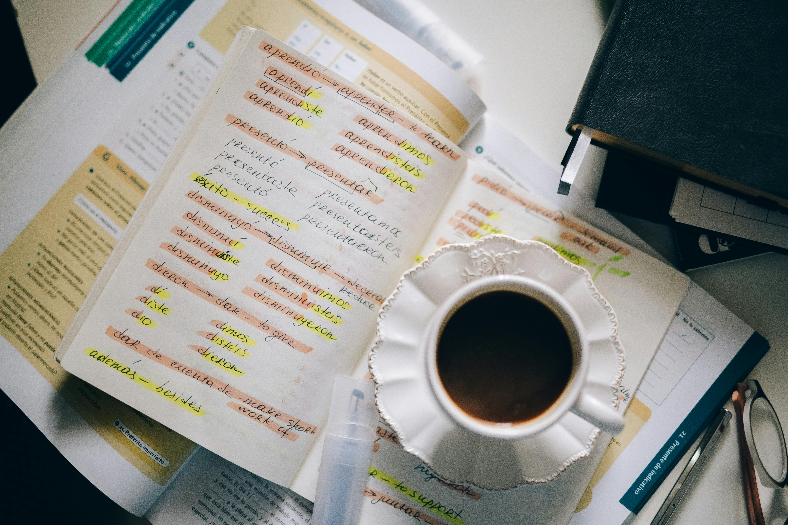
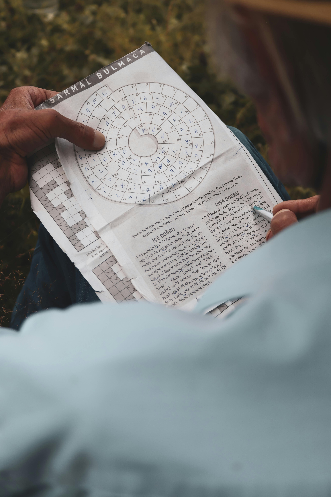

Hobilerim ve İlgi Alanlarım
Yabancı Dil Öğrenmek
Yabancı dil öğrenmek benim için sadece iletişim kurma aracı değil,
aynı zamanda farklı kültürlerin kapılarını aralamak gibi. Her yeni kelime,
bir milletin düşünce biçimine dair ipuçları taşıyor.
Dillerin yapısını ve mantığını çözmek bana büyük bir zevk veriyor.
Şu an aktif olarak ilgilendiğim birkaç dil var ve her biri bana yepyeni bir bakış açısı kazandırıyor.
Favori İngilizce Sözlüğüm


Seyahat Etmek
Yeni yerler görmek, farklı coğrafyaları ve yaşam tarzlarını deneyimlemek beni her zaman heyecanlandırıyor.
Seyahat ederken sadece manzaralar değil, insanlar, yemekler, sokaklar ve küçük detaylar bile bana ilham veriyor.
Gittiğim her şehirde mutlaka harita açıp sokak sokak keşfetmeyi seviyorum.
Sevdiğim bir seyahat planlama sitesi
Etimoloji
Kelimelerin kökenlerini araştırmak, dillerin geçmişine bir yolculuk yapmak gibi geliyor bana.
Bir kelimenin zaman içinde nasıl evrildiğini, hangi dillerden geldiğini öğrenmek benim için küçük bir tarih keşfi gibi.
Etimoloji sayesinde dil öğrenmek çok daha derin ve anlamlı hale geliyor.
Online Etimoloji Sözlüğü

 Bulmacalar
BulmacalarBoş vakitlerimde bulmaca çözmek benim için eğlenceli bir beyin egzersizi.
Özellikle yapbozlarla ve kelime oyunlarıyla uğraşmak, hem rahatlamamı sağlıyor hem de zihinsel olarak aktif kalmamı.
Google Arts&Culture Bulmaca Sitesi
Kitap Okumak
Kitaplar benim hem kaçış alanım hem de keşif rotam.
Farklı türlerde okumayı seviyorum; bazen bir romanın dünyasında kaybolmak,
bazen de bir düşünce kitabında saatler geçirmek bana çok iyi geliyor.
Kitap okumak, kelime dağarcığımı ve düşünme biçimimi geliştirdiğine inandığım en değerli alışkanlıklarımdan biri.
Online Kütüphane

 Coğrafya ve Haritalar
Coğrafya ve HaritalarKüçüklüğümden beri haritalar beni büyülemiştir.
Bir ülkenin sınırlarına, bir şehrin sokaklarına ya da bir kıtanın şekline bakmak bile heyecan verici geliyor.
Coğrafya sadece yer bilgisi değil, kültürlerin, tarihlerin ve doğal güzelliklerin kesişim noktası benim için.
Google Maps’te kaybolmayı bile severim!
Sevdiğim Bir Harita Oyunu